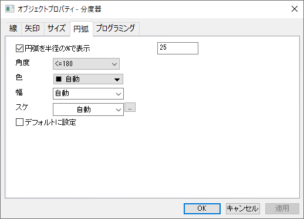

<h1 class="firstheading">(オブジェクトプロパティ)円弧タブ</h1>
<p class='urlname' style='display: none'>Ob-Prop-Arc-tab</p>
<p><br /></p>
<dl>
<dd><a class="image"></a></dd>
</dl>
<p><br />
グラフ上で<b>角度測定ツール</b>のラベルを追加したとき、このタブで円弧の設定が可能です。</p>
<p><b>円弧</b>タブでは、角度ラベルオブジェクトの<b>半径</b>、<b>角度</b>、<b>色</b>、<b>幅</b>、<b>線種</b>を設定できます。</p>
<ul>
<li><b>半径の%で円弧を表示</b>のチェックを外すと円弧が非表示になります。</li>
</ul>
<ul>
<li><b>タイプ</b>の設定のカスタム破線の定義についての情報は、<a href="../../UserGuide/UserGuide/The_(Plot_Details)_Line_Tab.html#Custom_Dash_Line" title="ユーザガイド:(作図の詳細)グラフの線タブ">作図の詳細の<b>グラフの線</b>タブ</a>のヘルプページを参照してください。</li>
</ul>
<ul>
<li><b>デフォルトに設定</b> のチェックボックスにチェックを付けると、このタブで選択した内容が、以後作成される同じタイプのオブジェクト全てに適用されます。</li>
</ul>
